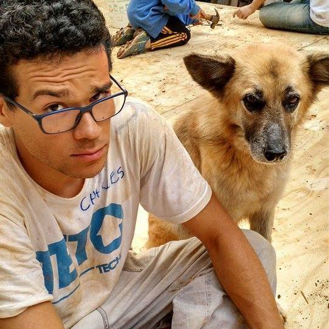
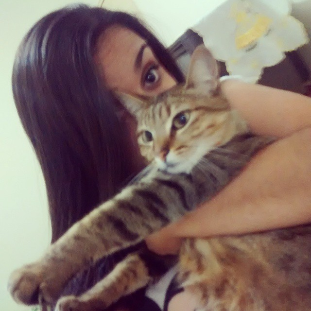

YADJ
Trabalho desenvolvido na disciplina de Computação Gráfica da UFSCar Sorocaba. O objetivo é desenvolver um pequeno jogo utilizando WebGL explorando as transformações vistas em sala de aula. Baixe a documentação da fase final aqui.
Desenvolvedores:

Charles David de Moraes - RA: 489662
Charles David de Moraes - RA: 489662

Ângela Rodrigues Ferreira - RA: 552070
Ângela Rodrigues Ferreira - RA: 552070